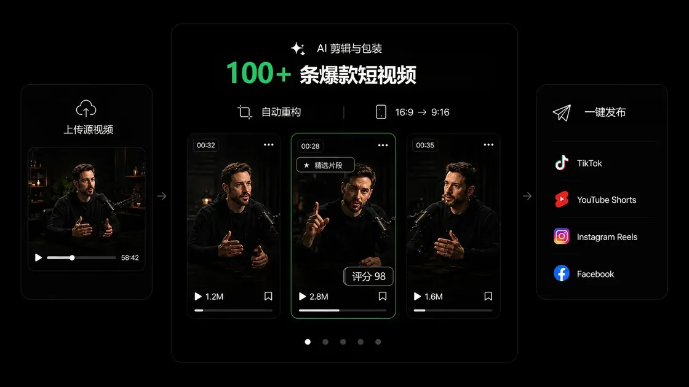
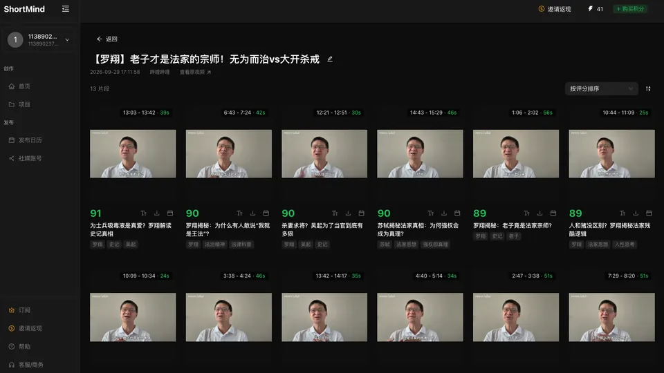
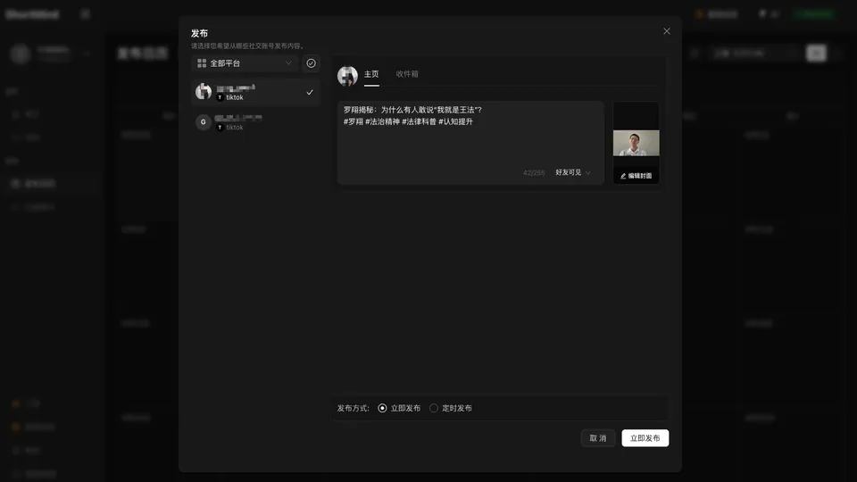

AI 精彩片段识别
分析对话、关键观点与情绪变化，自动发现值得传播的片段，减少反复观看长视频的时间。
让好内容被更多人看见。ShortMind 自动发现精彩片段、生成带字幕的短视频，将剪辑与社媒分发串联成一个 AI 工作流。
在 shortmind.ai 体验产品 · 在 GitHub 查看本站项目

面向创作者与内容团队的 AI 内容增长引擎，让已有长视频持续创造价值。
分析对话、关键观点与情绪变化，自动发现值得传播的片段，减少反复观看长视频的时间。
通过 0–100 分的潜力评分比较候选片段，将吸引人的内容放在开头，辅助选片与编辑决策。
自动生成字幕，搭配不同字幕样式，帮助观众跨语言理解你的内容。
识别人脸与主体，适配 9:16、1:1 和 4:5 等社媒画幅，让画面焦点跟随内容。
补充相关素材画面，生成标题、描述与标签，让故事表达和发布准备更高效。
连接剪辑与发布流程，面向 TikTok、YouTube Shorts、Instagram Reels、LinkedIn、Facebook 和 X。
把时间留给故事与创意，让 AI 帮你完成重复的剪辑工作。
从播客、访谈、课程、直播或其他长视频素材开始。
查看候选片段与评分，调整字幕、开场钩子及画面构图。
生成适合社媒的短视频，在同一流程中管理发布与排期。

集中查看生成的短视频及评分，再决定优先分享哪些内容。

在短视频工作流中准备社媒帖子与发布排期。
适合播客创作者、教育工作者、访谈节目、电商直播、体育内容、企业营销团队及媒体机构。
ShortMind 是 AI 视频切片与内容再利用平台，帮助创作者将长视频转为短视频，提供精彩片段识别、字幕、智能重构画面与社媒分发等能力。
100+ 条潜力短视频表达的是产品的内容再利用方向。实际可用片段数量取决于原视频时长、内容与设置。Viral Score 是辅助判断的预测评分，不保证播放量或爆款结果。
请访问 shortmind.ai，了解当前产品功能、套餐并登录使用。这个 GitHub Pages 页面用于品牌介绍与官网导航。
页面链接的仓库包含这个静态品牌站点与文档。使用 ShortMind 视频产品，请前往官方网站。